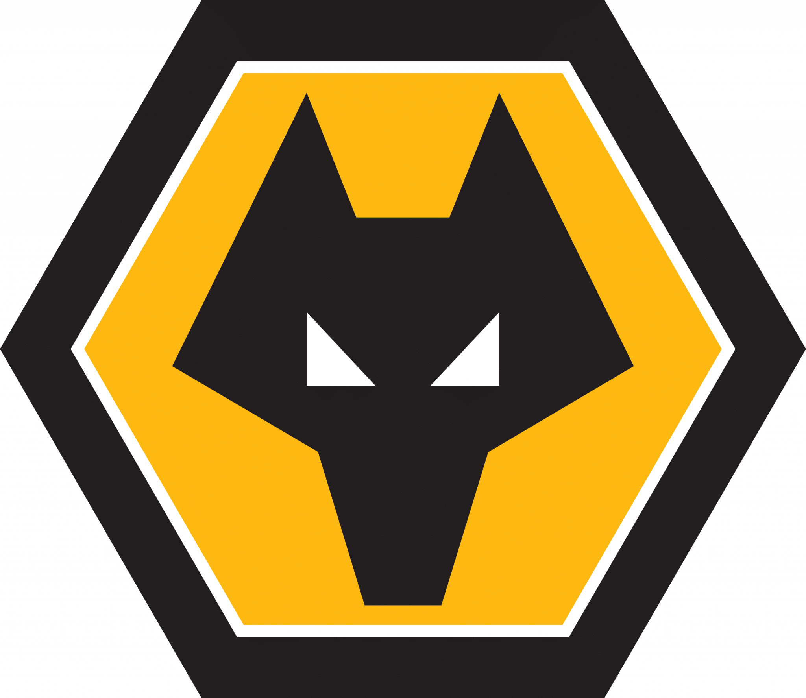
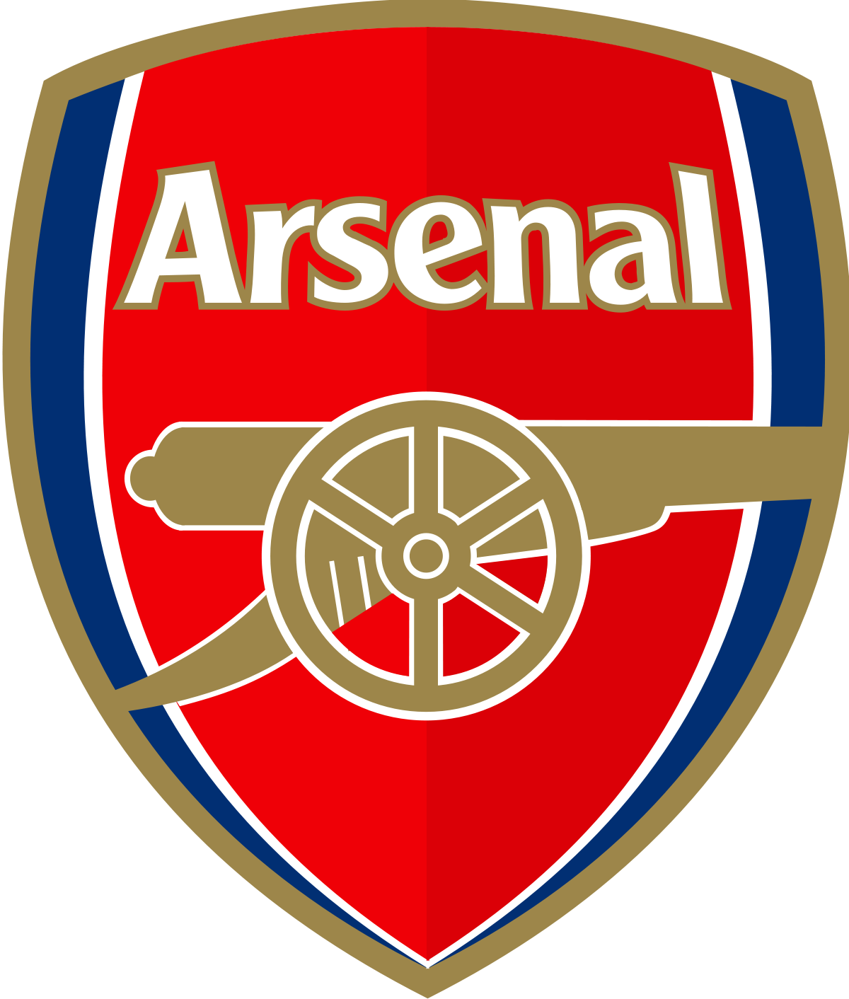
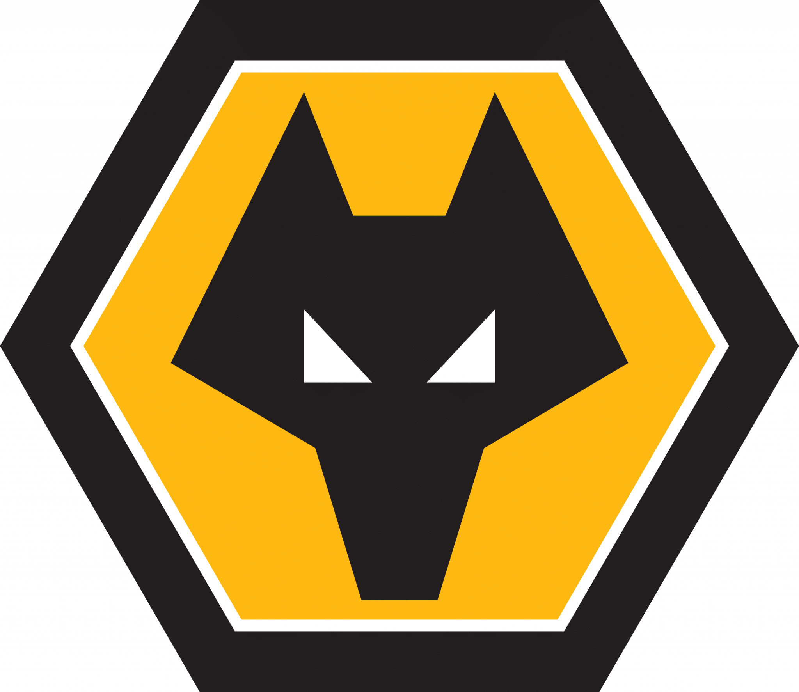
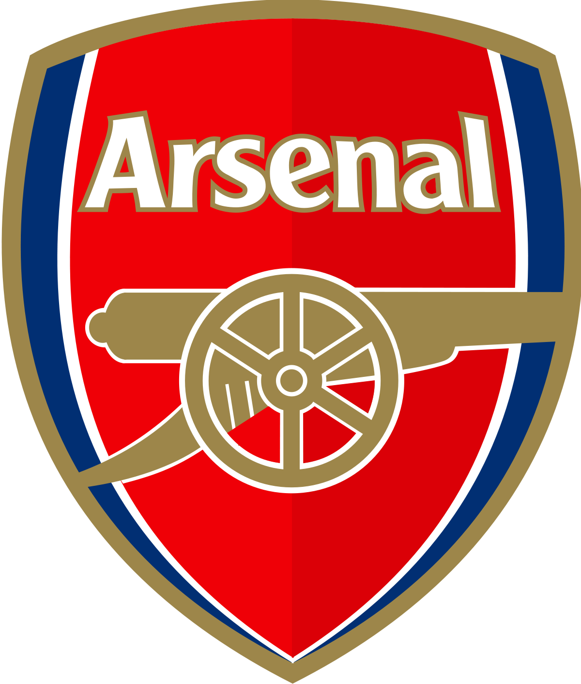
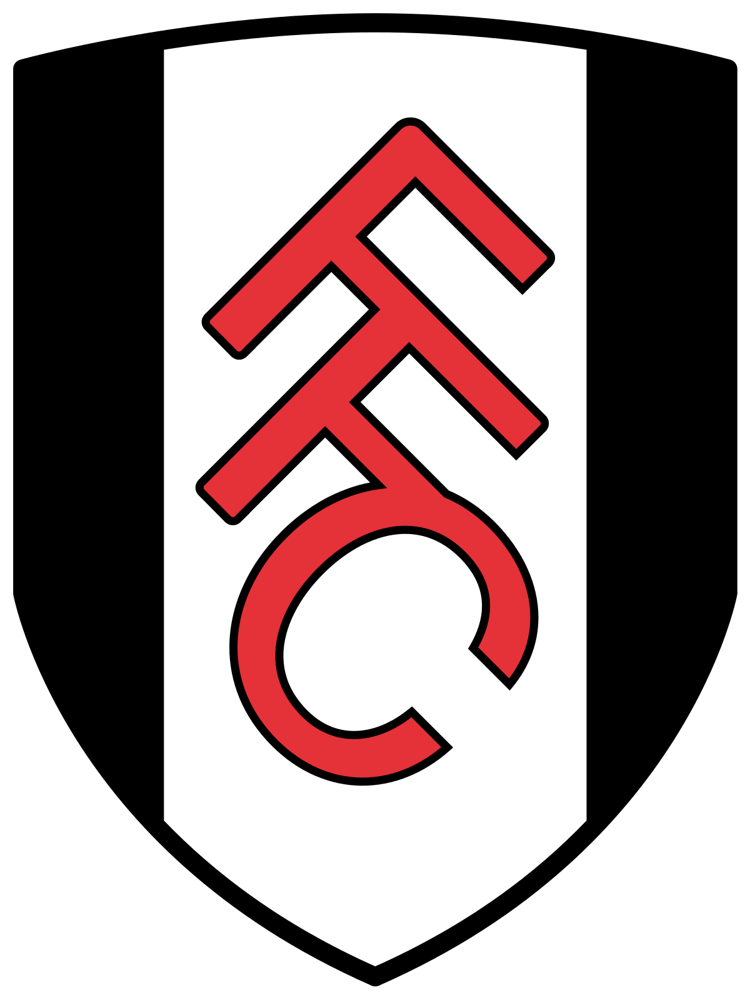
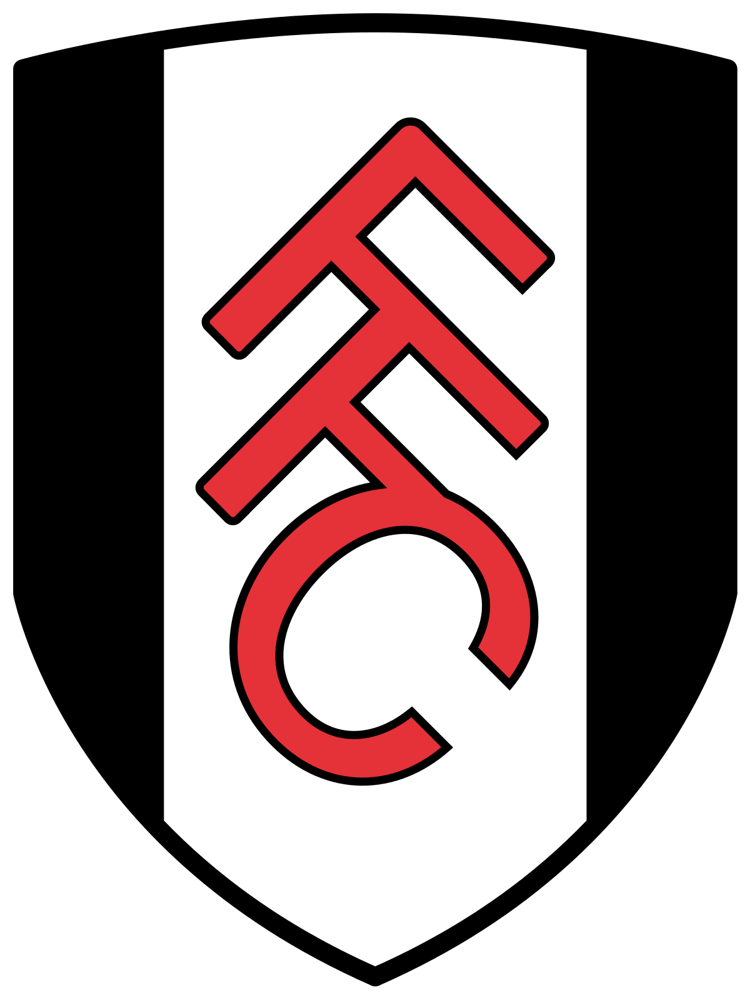

 


O Newcastle United é um clube de futebol profissional com sede na cidade de Newcastle upon Tyne, no nordeste da Inglaterra. O clube foi fundado em 1892 e atualmente disputa a Premier League, a primeira divisão do futebol inglês.
O Liverpool é um famoso clube de futebol da Inglaterra, fundado em 1892 e com sede na cidade de Liverpool. O time tem uma das torcidas mais fanáticas e numerosas do mundo e é conhecido por seus uniformes vermelhos, apelidados de "Reds".
O Manchester United é um dos clubes de futebol mais populares e bem-sucedidos do mundo. Fundado em 1878, o clube é sediado em Manchester, Inglaterra, e joga suas partidas em casa no estádio Old Trafford, que tem capacidade para mais de 75.000 espectadores.
O Manchester City é um clube de futebol profissional com sede na cidade de Manchester, na Inglaterra. Fundado em 1880, o clube passou por altos e baixos em sua história, mas nos últimos anos se tornou uma das equipes mais bem-sucedidas do futebol inglês e europeu.
O Wolverhampton Wanderers Football Club, mais conhecido como Wolves, é um clube de futebol profissional com sede na cidade de Wolverhampton, na Inglaterra. Fundado em 1877, o clube tem uma rica história e uma base de torcedores leais.
O Arsenal Football Club é um time de futebol profissional inglês sediado em Londres. Fundado em 1886, é um dos clubes mais bem-sucedidos da história do futebol inglês, tendo conquistado 13 títulos da Premier League e 14 títulos da Copa da Inglaterra, além de outros troféus nacionais e internacionais ao longo dos anos.
O Nottingham Forest Football Club é um time de futebol profissional inglês sediado em Nottingham. Foi fundado em 1865 e é conhecido por sua história de sucesso nos anos 70 e 80, sob o comando do lendário treinador Brian Clough.
O Everton Football Club é um time de futebol profissional sediado na cidade de Liverpool, na Inglaterra. Fundado em 1878, é um dos clubes mais antigos e tradicionais do futebol inglês.
O Aston Villa Football Club é um clube de futebol profissional inglês com sede em Birmingham. Fundado em 1874, é um dos clubes mais antigos e tradicionais do futebol inglês.
O Chelsea Football Club é um clube de futebol profissional inglês com sede em Londres. Fundado em 1905, o clube é um dos mais bem-sucedidos da Inglaterra e da Europa.
O Fulham Football Club é um clube de futebol profissional com sede no bairro de Fulham, em Londres. Foi fundado em 1879 e é um dos clubes mais antigos da Inglaterra.
O Tottenham Hotspur Football Club, mais conhecido como Tottenham ou Spurs, é um clube de futebol profissional com sede em Londres. Foi fundado em 1882 e é um dos clubes mais antigos e bem-sucedidos da Inglaterra.